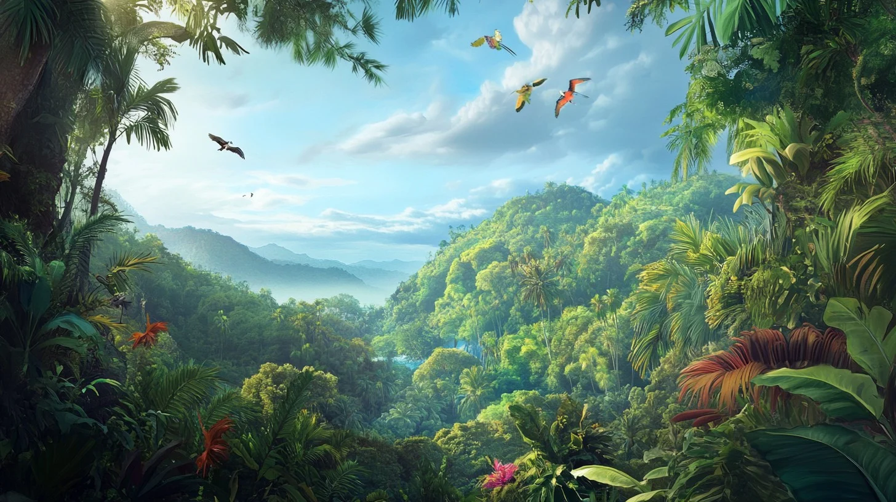
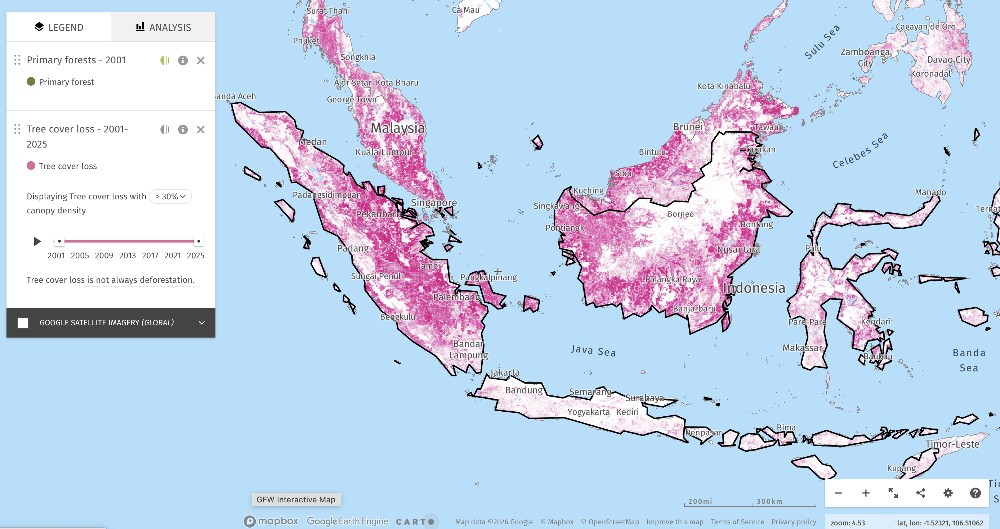
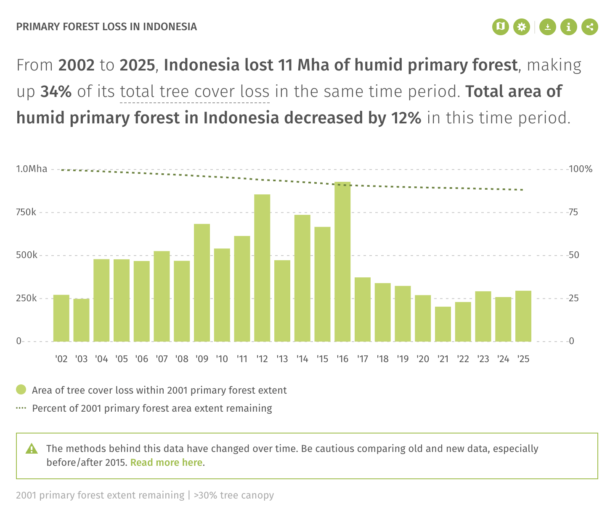
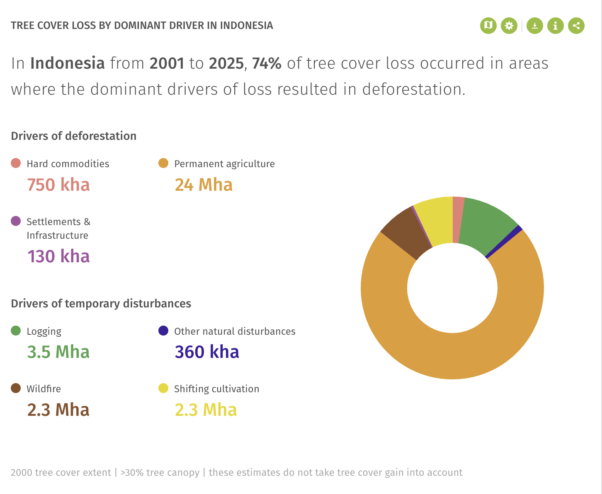
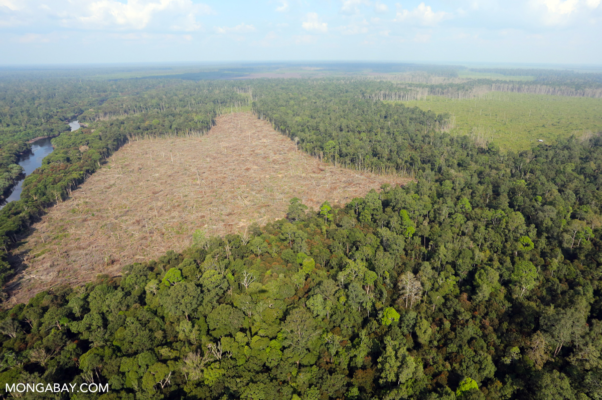

Tree cover loss
Forest cover is removed through clearing, burning, or conversion.
The landscape behind extinction
It is a working system of food, movement, shelter, moisture, soil, and memory. When that system is cut, drained, burned, or converted into plantations, orangutans do not simply lose “space.” They lose the relationships that make survival possible.

Forest loss is often described through numbers: hectares cleared, trees lost, emissions released. Those numbers are important, but they can also make the forest feel flat, as if it were only a measurable surface. For orangutans, the forest is not an empty green area. It is a vertical world of canopy paths, fruiting cycles, sleeping nests, and learned movement routes.
Oil palm expansion changes that world by replacing mixed tropical forest with a landscape organized around one crop. Vijay et al. show that oil palm expansion has contributed to recent deforestation and biodiversity loss, especially in tropical regions where plantations replace species-rich forests.[1] Their argument is important because it shows that the problem is not simply “less forest.” The deeper change is the replacement of ecological complexity with agricultural uniformity. A rainforest contains many species, layers, and relationships; an oil palm plantation is designed for output, efficiency, and export. Both may appear green from a distance, but they support very different kinds of life. This distinction is central to orangutan habitat loss: the land is not only cleared, but reorganized around human production.
Tree cover loss
This Global Forest Watch map shows tree cover loss in Indonesia using a canopy density threshold above 30%. The pink areas are not evenly scattered. They form clusters and edges, suggesting that forest loss often expands outward from already disturbed zones rather than appearing as isolated points.[2]
For orangutans, this pattern matters because habitat depends on connection. A small clearing can become more than a missing patch of trees when it divides feeding grounds, interrupts canopy movement, or brings human activity closer to forest interiors. The map shows loss as geography, but its consequence is lived as separation.


The timeline matters
The yearly chart shows that primary tree cover loss rose sharply and reached its highest levels between 2009 and 2016, before decreasing after 2017.[2] That decline is important, because it suggests that policy, market pressure, enforcement, or changing land-use practices can affect the rate of forest loss.
But the lower numbers after 2017 should not be read as simple recovery. Forest loss is cumulative. A year with less clearing does not reconnect fragmented habitats from previous years, restore old-growth forest, or bring back lost movement routes. For orangutans, the damage of peak-loss years can continue long after the chart begins to improve. Slower destruction is still destruction when the remaining habitat is already under stress.
What drives the loss?
The driver chart shows that from 2001 to 2025, permanent agriculture is the largest driver of tree cover loss in Indonesia.[2] This is a crucial detail. It shifts the story away from the idea of forest loss as random damage or temporary disturbance. Much of the loss is tied to land being converted into long-term agricultural use.
This is where orangutan habitat loss connects directly to palm oil. Permanent agriculture does not simply remove trees and then move on. It replaces a diverse forest system with a managed production system. The land becomes organized around yield, export, and commodity value rather than habitat, movement, or ecological complexity. The forest is not only lost; it is given a new economic purpose.

A cleared forest edge may look like development. A road may look like access. A plantation may look like productivity. This is why slow environmental damage can be difficult to recognize while it is happening. The violence is not only in one dramatic scene of destruction, but in the repeated conversion of living systems into economic surfaces.
Orangutan habitat loss makes this especially clear. The species is not pushed toward extinction by one single event, but by accumulated changes: fewer intact forests, smaller connected ranges, more human contact, and fewer safe places to feed and nest. The forest does not need to disappear completely before it stops functioning as habitat.

Edges are where two landscapes meet: forest and plantation, habitat and production, animal movement and human infrastructure. For orangutans, these edges can increase risk. They may bring the species closer to farms, roads, workers, fires, and conflict.
This is why habitat fragmentation is more than a visual break in the forest. It changes the rules of the landscape. What used to be interior becomes exposed. What used to be connected becomes isolated. What used to be shelter becomes a border.
Forest cover is removed through clearing, burning, or conversion.
Land is converted into long-term production, often replacing diverse forest with simplified crops.
Remaining forests become smaller, more exposed, and less connected.
Orangutans face fewer food sources, fewer safe routes, and greater contact with humans.
The forest data does not only show where trees disappeared. It shows how a habitat becomes reorganized. Once forest is converted into permanent agriculture, biodiversity loss becomes built into the landscape itself.
From forest to product
If permanent agriculture is a major driver of forest loss, the story cannot stop in Indonesia. Palm oil moves through mills, exporters, manufacturers, and markets before appearing in ordinary products. The next page follows that movement from the plantation into global consumption.
Continue to The Product